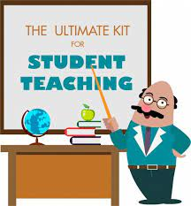
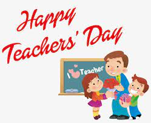

What are the qualities of a good teacher?
 So, what exactly are the traits of a good teacher? We go into further detail below, but for a quick overview, these 8 qualities are some of the best that any teacher can have:
- Skills in listening to students and understanding them
- The ability to easily and expertly communicate
- Passion and knowledge for all the subjects they teach
- An approachable and friendly nature
- Great talent in organization and preparation
- Excellent work ethic in the long-term
- Patience and empathy when working with students and parents
- Dedication to always growing and developing their skills
While many skills make up a fantastic teacher, these teacher qualities are just some of the particularly on-point traits that can make all the difference. According to Teach.com, an amazing teacher can really change the lives of students – making these qualities even more critical. Read on for a more detailed look at what these skills are, and what makes a good teacher great.
Skills in listening to students and understanding them
While the ability to communicate and speak is, obviously, crucial when it comes to education, it’s also incredibly important that teachers know when to listen to their students as well. For students to have the best possible learning environment, teachers should be able to listen to what their class is saying. Whether it’s in response to a question, in one-on-one discussions, or even for group work where students are talking amongst themselves.
Knowing when to stop talking – and open your ears – is as vital a skill for teachers as any other on this list, and is one that can take the most practice in many educational settings. But with practice, time and effort, it’s possible for any teacher to be just as much a ‘listener’ as they are a ‘talker,’ which can be a vital skill for students both when it comes to being heard and in demonstrating proper models for equal communication.
The ability to easily and expertly communicate
Communication is vital for individuals in just about any career, but for teachers, that concept is tenfold. The ability to clearly, effectively, and practically share information and knowledge is a vital part of teaching. The job of an educator is to convey, share, and deliver knowledge actively. Communication skills offer a way to make that delivery engaging, enjoyable to listen to, and easy to follow along with. An expert communicator is someone that can tailor their speech for a particular audience, helping those people to understand and comprehend what is being said.
Communication is used in every aspect of the classroom. From actively teaching lessons to passively providing written materials, your students are being communicated to for 90% of their school day. Being able to carry out that communication smoothly, organically, and successfully is a hugely important part of helping students to learn and achieve greater things. According to the Pew Research Center, learning excellent communications skills early can be beneficial for the rest of your student’s lives.
Passion and knowledge for all the subjects they teach
It will come as no surprise to educators that a passion and enthusiasm for your subject matter carries over to your students – excitement is infectious, after all. If you’re excited about what you’re teaching your students, then your class will be far more likely to be engaged with the material. But it’s more than just enthusiasm that makes passion so important. It also encourages teachers to expand their learning and improve their knowledge of specific subjects, making them better teachers overall.
Being able to pass passion, understanding, and knowledge onto students is an integral part of being an educator. Inspiring your students to do their own learning and research can be what makes a teacher genuinely exceptional, especially when they’re able to support additional learning and even answer more enriching questions along the way. For students, having a teacher be excited about the subject they are teaching is only beneficial, making it one of the most essential characteristics of a good teacher.
An approachable and friendly nature
Very few students enjoy being taught by a teacher they are scared of. While, years ago, teachers had far more authority and were to be respected rather than liked, these days, it makes more sense for your class to enjoy spending time with you. If you strive to be approachable, likeable, and friendly in the classroom, it’s no surprise that your students will enjoy spending time with you more. You don’t have to be their best friend, but if you can be welcoming, open, and easy to approach, you’re off to an excellent start.
Of course, teachers will always have to provide management and even discipline for their students in some circumstances. But this can be balanced out by being generally positive, approachable, and friendly with your class. You want students to enjoy school – and teachers with this positive trait will soon find their class is far more keen to get into that classroom than students with unapproachable, mean, or rude teachers.
Great talent in organization and preparation
Education is all about organization – and if anyone tells you otherwise, they’re wrong. A large part of your life as a teacher will be spent organizing things. Whether it’s your class, your materials, your reports, or simply your classroom, prepping and getting everything ship-shape is a significant part of being an educator. As such, for those that have talents in being ahead of the curve, teaching can become slightly more natural and more enjoyable.
Even for those that don’t naturally excel at keeping things in order and prepping a week in advance, pushing yourself to do a bit more can be an excellent trait to have. Ensuring you have great lesson plans in place, materials ready ahead of time, and thinking outside the box are all invaluable ways to be prepared and organized that don’t fall into the typical ‘neat and tidy’ personality box.
Excellent work ethic in the long-term
Working in a school can be demotivating for some overtime. No-one denies that teaching is a difficult job, and we all certainly have our down days. But a strong work ethic is one of those skills that can get you far in life, and even further in education. An effective teacher is one that is self-motivated and overcomes obstacles and budgets to succeed against the grain. A strong work ethic means being self-driven and can help teachers become even better educators over time.
While there’s nothing wrong with needing a break now and then, striving to succeed is a quality that does set some teachers apart from others. If you’re willing to do whatever it takes to succeed, then you fall firmly in the camp of educators with a strong work ethic. For many teachers, this will help them go far further in their career – given a chance.
Patience and empathy when working with students and parents
Being patient and empathetic when it comes to teaching is a skill that often needs time to be acquired, but it can be invaluable in the long-term. Being able to be sensitive to the differences between your students, the capabilities of individuals, or even what’s going on at home for specific children can all help you become a kinder, more empathetic teacher as a whole.
While empathy doesn’t come easily for everyone, taking time to put yourself in the shoes of your students – or even their parents – can be a quality that does make educators better at their jobs. Working with children every day means these patient and sensitive qualities are just as important as hard skills and should be nurtured in exactly the same way.
Dedication to always growing and developing their skills
Teaching is a role that’s always changing, evolving, and growing. So teachers that are dedicated to changing, developing, and improving themselves are the ones that are far more likely to be the best at what they do. If you can commit to at least a little personal development, training, or learning each week, you’ll be in a far better position to support your students and stay up-to-date on all you need to know as a teacher.
The quality of dedication is applicable to many circumstances and situations. But when it comes to developing your skills and improving your person knowledge, this invaluable skill is an excellent one for teachers to have. Whether this is formal development through the school or informal learning at home, there’s value to having that dedication to further yourself through any means.